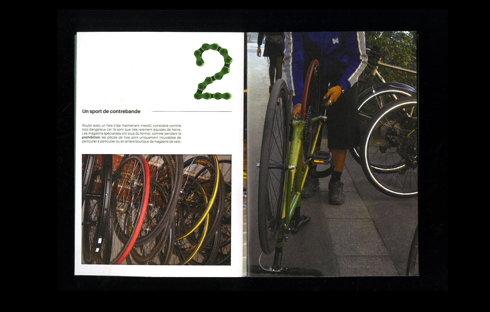
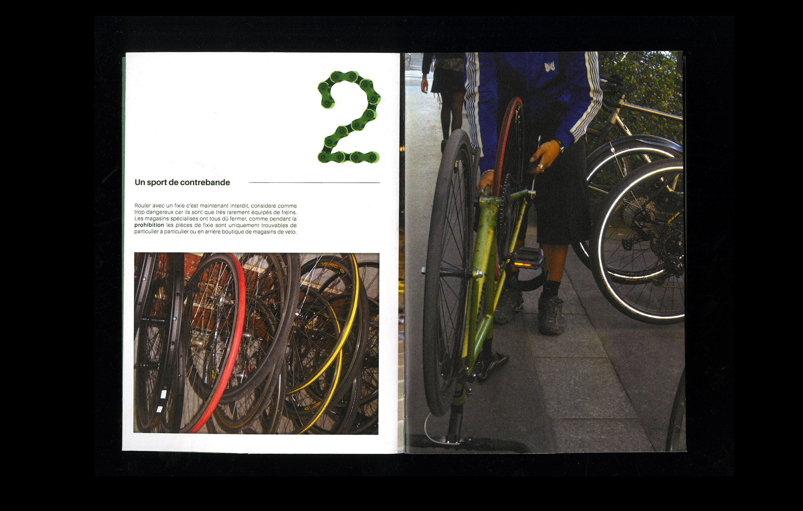

MISE EN PAGE DE TEXTES ET D'IMAGES —
MISE EN PAGE DE TEXTES ET D'IMAGES —
« Pignon Fixe » est une édition photo dédiée à la pratique du vélo en « Pignon fixe », autrement appelé « Fixie ».
Pour la réaliser, je me suis rapproché d’un collectif d’adeptes de la pratique présent sur Paris.
Cette édition regroupe des photos prises à l’occasion de rassemblements ou de courses. Les textes accompagnants les photos permettent de rentrer en détail et expliquent pourquoi certains cyclistes continuent d’utiliser ce types de vélos au fonctionnement rustique.
La notion de groupe est à la base de cette édition. L'objectif est ici de permettre de découvrir une pratique peu commune qui perdure au sein d'une communauté de fervents pratiquants.
 
